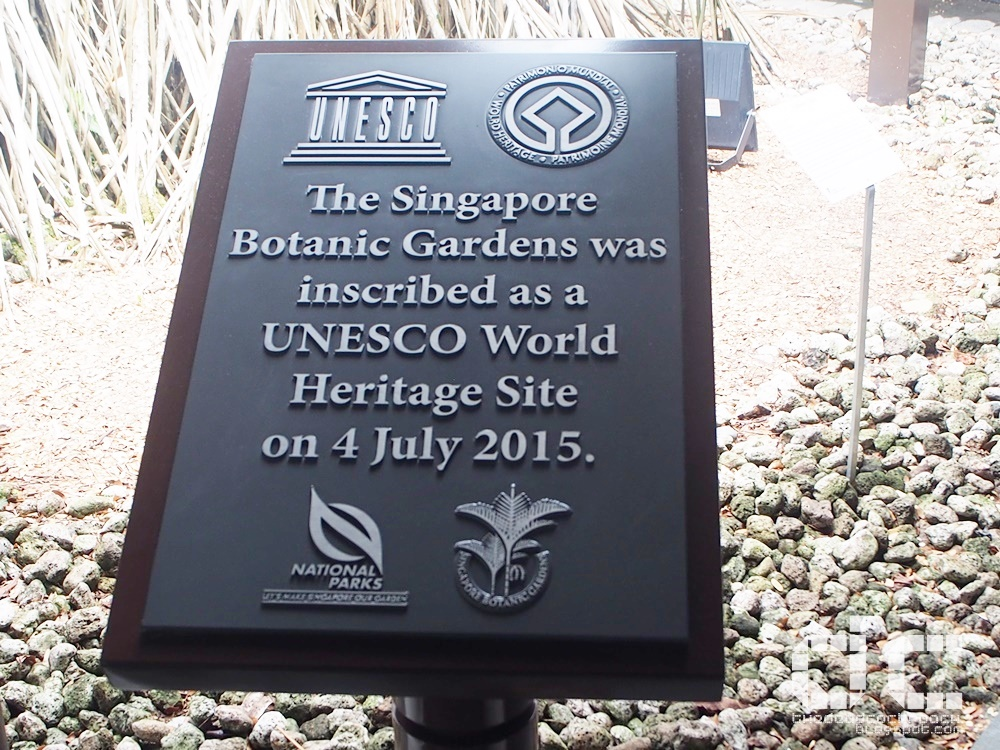
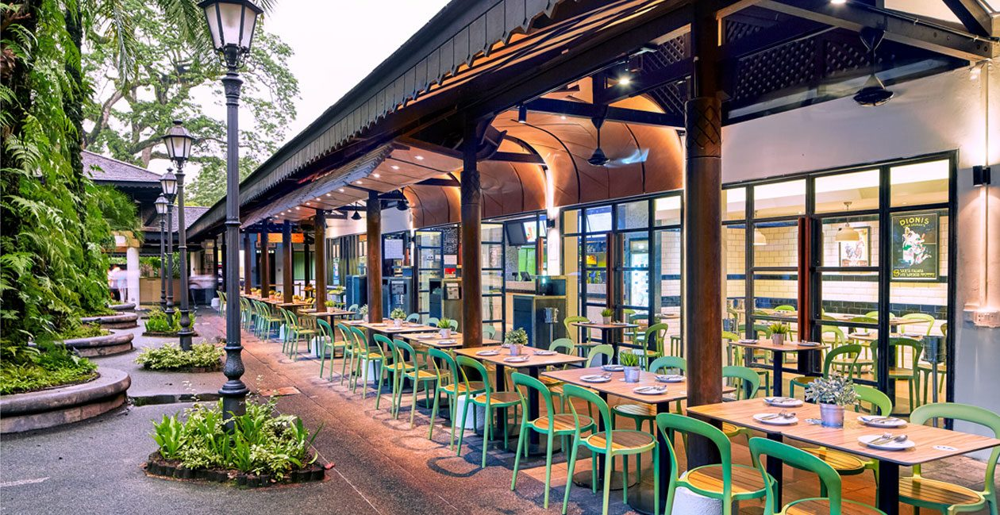

The first botanical garden was set up by Sir Stamford Raffles, the founder of Singapore and a keen naturalist, in 1822 on Government Hill at Fort Canning, mainly to introduce into cultivation economic crops. It closed in 1829 and, in 1859, at the present Tanglin site a new garden was developed by an Agri-Horticultural Society, and later handed over to the government in 1874. From an ornamental garden with roads, terraces, a band parade area and even a small zoo, it has come a long way in evolving into a leading equatorial botanic garden of 82 hectares, where major world crops, such as rubber and orchids were launched.
In June 2012, Singapore ratified the World Heritage Convention and in December 2012, submitted its World Heritage Tentative List to UNESCO to indicate interest in inscribing the Singapore Botanic Gardens as a World Heritage Site.
In January 2014, the official Nomination Dossier for the Gardens was submitted to UNESCO. In September 2014, a technical assessor from the International Council on Monuments and Sites (ICOMOS) visited the Gardens as part of the bid evaluation process.
On 4 July 2015, the Gardens received inscription as a UNESCO World Heritage Site at the 39th session of the World Heritage Committee. (WHC)
The Gardens was originally developed along a 3-Core Concept. The three cores comprised of:
A fourth core,Tyersall-Gallop, was created with the opening in 2017 of the Learning Forest which is designed to integrate into the Gardens' existing rainforest to form an enlarged forest habitat.
Each Core presents an exciting array of attractions. Take your time to stroll around the Gardens and enjoy the wonderful sights, sounds and wonders the luscious greenery offers.
The Garage is a multi-concept F&B destination uniquely located within the Singapore Botanic Gardens, Singapore’s only UNESCO Heritage site. The Garage has enchanted diners and strollers in the Gardens with the two establishments housed in its beautiful 1920s Art Deco conserved architecture, namely Bee’s Knees at Level 1 and Botanico at Level 2.

Click here to find out more about the food options available for you at the Garage:
https://therantingpanda.com/2017/02/21/food-review-botanico-singapore-at-the-garage-singapore-botanic-gardens-definitely-one-of-the-best-new-restaurant-this-year/

Halia – Malay for ginger – is located in the one-hectare Ginger Garden of the Singapore Botanic Gardens where over 250 species of gingers with their stunning foliage and colourful flowers thrive. The construction of Halia was carried out simultaneously with the development of the Ginger Garden in the year 2000. Careful consideration was given to the special park setting, such that architecture conformed to the contours of the land, the dignity of mature trees and the preservation of heritage.

In 2001, the Halia was officially opened. The result is an unobtrusive dining room with full height glass windows, beckoning the greenery indoors, and allowing guests to dine in the Garden whilst still comfortably ensconced in cool surroundings. Decades-old majestic palm trees stand like sentries, guardian-witness to the earthy beauty that is the Singapore Botanic Gardens.
For more info about the Halia, you can visit their website here:
http://thehalia.com/Casa Verde is a casual trattoria nestled within the lush greenery of the Singapore Botanic Gardens. Their name, which means ‘Green House’ in Italian, is particularly apt for their restaurant, given their relaxing atmosphere amidst verdant garden landscapes.
Apart from wholesome and affordable pastas, Italian sandwiches and wood-fired thin crust pizzas, Casa Verde also offers a number of local favourites, appealing to Singaporeans and tourists alike.
Casa Verde is a Cafe by day and restaurant by night, Casa Verde remains a favourite eating spot for park goers.
With the Orchid being Singapore's national flower, it is no surprise that we have a garden dedicated to showcasing the flowers on their own. Opened on 20th October 1995 by Former Senior Minister Lee Kuan Yew, the National Orchid Garden is located on the highest hill in the Singapore Botanic Gardens. Three hectares of carefully landscaped slopes provide a setting for over 1,000 species and 2,000 hybrids, with about 600 species and hybrids on display.

The distinctive feature of the National Orchid Garden not to be missed is its design concept which presents the display of plants in four separate colour zones over most of its areas:

This colour zoning is achieved by a careful blend of selected trees, shrubs, herbs and orchids (mostly hybrids) with matching foliage and floral colours.

Fun fact:The National Orchid Garden section of the Botanic gardens houses orchids named after the likes of Elton John, Jackie Chan and even Princess Diana and Nelson Mandela. More recently, Kate Middleton and Prince William were presented the Vanda William Catherine - a white and purple free-flowering orchid hybrid.

The Jacob Ballas Children’s Garden is the first garden in Asia dedicated to children. Its theme of ‘Life on Earth Depends on Plants’ aims to educate and instil a love for nature in children. The Garden is a complete nature-learning environment, where children can delve deeper into the ecology of plants and our environment through discovery and experiential learning. It offers children a space for exploration, adventure and play, with a farm, an orchard, and a forest with its own stream and ponds.


Here the land falls away from the wooded skyline of tall forest trees into a grand valley swept with palms ranging in size from the squat Mexican Fan Palm, Washingtonia robusta, to members of the ‘skyscraper’ fan palm genus, Livistona. At one end of the valley, families and music enthusiasts regularly gather for orchestral performances at the Shaw Foundation Symphony Stage.
The octagonal gazebo known as the Bandstand was erected in 1930 and has retained its original form over the years. The Bandstand site was initially just a small hill that stood at 33 m above sea level and was the highest point at the Tanglin Core site. This hill was levelled off around 1860s to serve as the site for regimental bands to perform surrounded by terraced flower beds and palms.Although no longer used for music performances, it is a favourite wedding photo spot and an iconic landmark of the Gardens.

This tranquil sundial garden was originally laid out in 1929 by the Director of the Botanic Gardens Eric Holttum whose wife designed the sundial with its enigmatic inscription. Four water lily tanks were added in the 1970s and four Grecian statues in 2006.
Free
5am to 12 midnight
1 Cluny Road

For more information about the opening hours, ticket prices and more information on the respective attractions mentioned above, you can visit their website below.